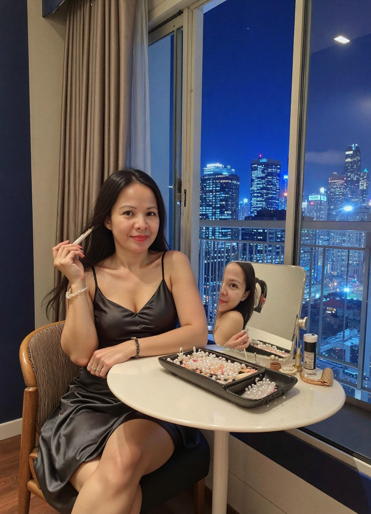

She wraps up her day, a mystery draped in silk and pearls, gazing over the city skyline.
A quiet mind lies beneath the beauty—her escape is found in pages and daydreams.
Barefoot in thought, the simplicity of denim and soft lamplight make her glow.
In her robe, she tends to rituals of renewal—hers is a beauty that begins with care.
Candlelight kisses her curves—she waits, yet reveals nothing more than a smile.
She’s warm and welcoming, but the fire behind her gaze is yours to earn.

In lace and candles, Joyce is serenity and seduction distilled into one fleeting moment.
Her touch is delicate, her presence undeniable—this is Virtus Limina's embrace.
Night has come, and Joyce is starlight grounded—ethereal and just out of reach.
The look that says more than words ever could—she awaits the one who understands silence.